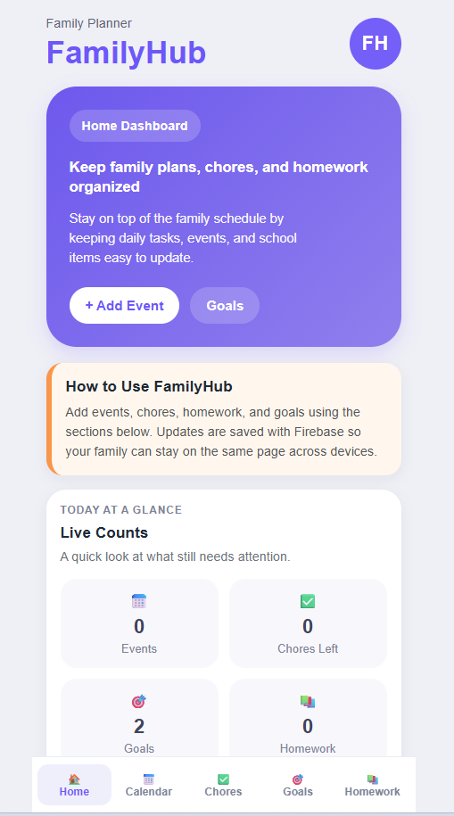
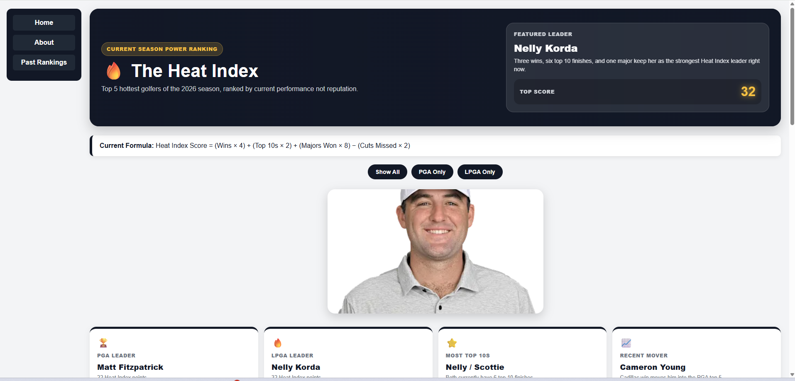
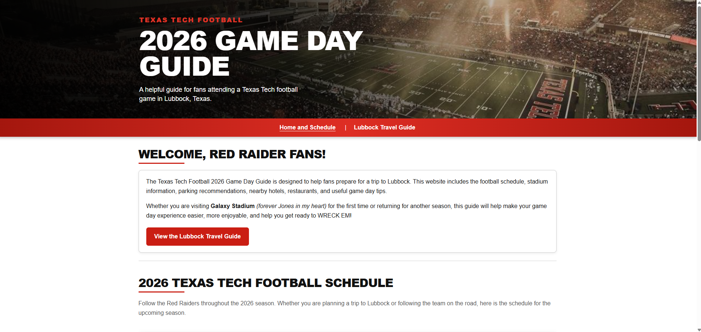

Hello, I'm Rafael Amaya.
Technology Professional & Project Manager
Welcome to my personal portfolio! I am currently a senior at Texas Tech University, majoring in Computing Applications. I have a background in technology and project management, and I enjoy learning new skills and finding ways to challenge myself. I created this website to share a little about who I am, my experience, and some of the projects I have worked on along the way.
View My ProjectsAbout Me
I was born and raised in the Dallas-Fort Worth area and have a background in technology and project management. Outside of work and school, I enjoy spending time with my wife and kids, watching sports, playing golf, and finding new things to learn. I'm a big Texas Tech fan and enjoy cheering on the Red Raiders whenever I get the chance. Wreck EM!
Education & Achievements
Texas Tech University
Bachelor of Science in Computing Applications
Expected Graduation: Spring 2027
Academic Achievements
I have been named to the President's List for three consecutive semesters at Texas Tech University and currently maintain a 4.0 institutional GPA.
Certifications
Microsoft Certified: Azure Fundamentals (AZ-900)
My Projects

FamilyHub Web App
A family organization app I created using HTML, CSS, JavaScript, and Firebase. It helps families keep track of events, chores, homework, and goals.
View Project
Heat Index Golf Rankings
A golf ranking website I developed that uses a custom scoring system to rank professional golfers based on their performance.
View Project
Red Raider Football Guide
A Texas Tech football knowledge base I created with over 20 pages of information for Red Raider fans.
View ProjectSkills & Experience
Professional Experience
I currently work as a New Product Development Project Manager at INW Manufacturing, where I help manage new product launches and coordinate projects across different teams.
Before that, I worked as a Systems Support Analyst at Dynata, where I gained experience in IT support, troubleshooting, cloud technology, and working with different software platforms.
Technical Skills
- Microsoft Azure
- Microsoft 365 and SharePoint
- Jira and Confluence
- HTML, CSS, and JavaScript
- IT Support and Troubleshooting
- Project Management
Personal Interests
Outside of work, I enjoy spending time with my wife and two children, our favorite bossy corgi, following Texas Tech sports, playing golf, and reading.